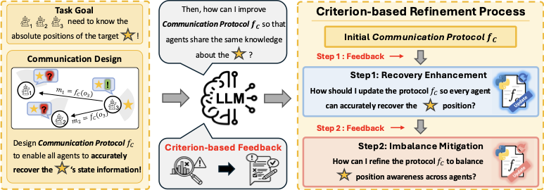
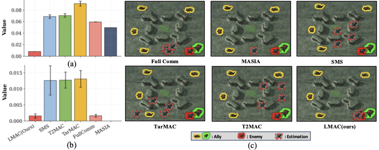
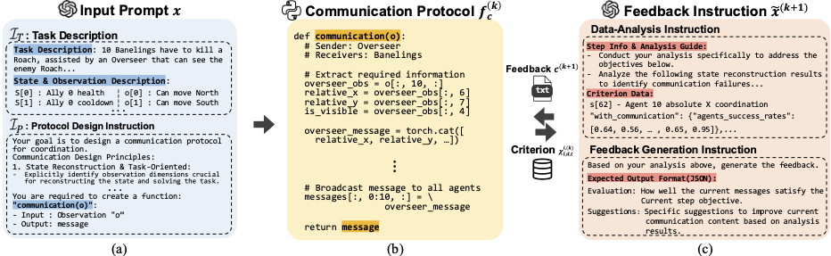
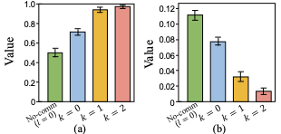
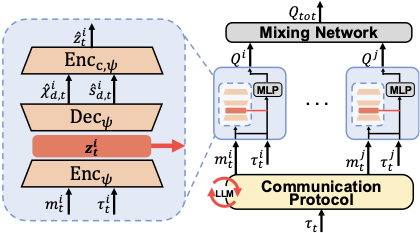
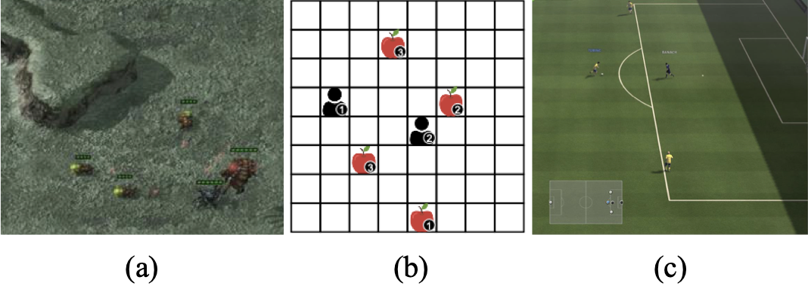
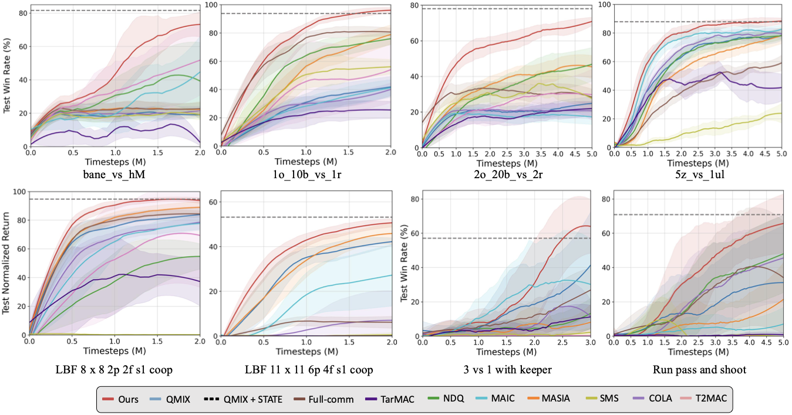
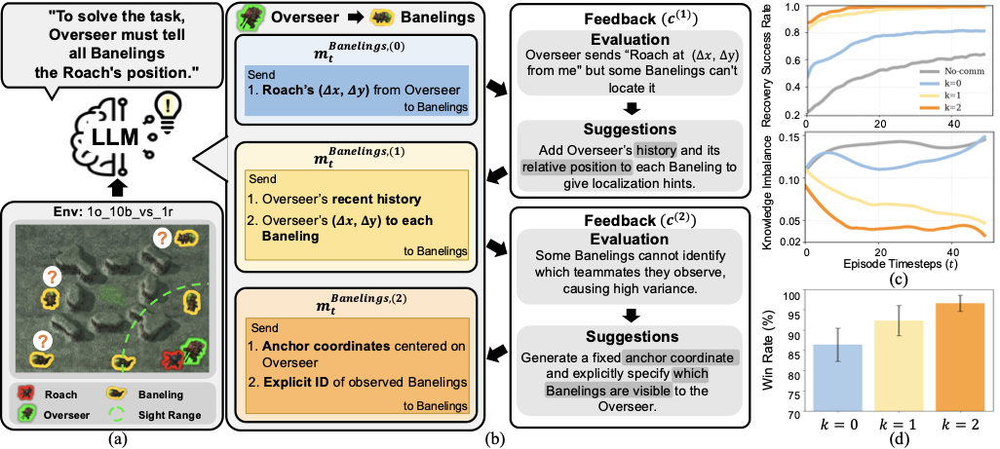

Communication is a key component in multi-agent reinforcement learning (MARL) for mitigating partial observability, yet prior approaches often rely on inefficient information exchange or fail to transmit sufficient state information. To address this, we propose LLM-driven Multi-Agent Communication (LMAC), which leverages an LLM's reasoning capability to design a communication protocol that enables all agents to reconstruct the underlying state as accurately and uniformly as possible. LMAC iteratively refines the protocol using an explicit state-awareness criterion, improving state recovery while narrowing differences in agents' knowledge. Experiments on diverse MARL benchmarks show that LMAC improves state reconstruction across agents and yields substantial performance gains over prior communication baselines.
LMAC asks a large language model to design and refine an executable, agent-wise communication protocol from natural-language descriptions of the task, the global state, and each agent's observations. Refinement is driven by a state-awareness criterion that turns offline transition data into language feedback, so the LLM adds only the messages required for accurate and balanced state recovery.

Key Contributions.
Existing communication methods can still leave inefficiencies in recovering state information. On a StarCraft II task where allies must infer an enemy position, even strong baselines like MASIA and FullComm remain inaccurate or produce non-uniform reconstruction across agents.

LMAC builds on Reflexion-style iterative refinement, replacing the fixed feedback with step-wise feedback instructions tied to two explicit objectives. The output is an executable Python protocol that maps each agent's observation history to agent-specific messages.

From the task prompt, the LLM generates an initial executable protocol that maps observations to a minimal but semantically meaningful message.
Using the agent-wise recovery success rate, the protocol is refined to add task-relevant information where state reconstruction is failing.
Using the inter-agent knowledge imbalance, the protocol is refined so that state recovery becomes consistent across all agents.
To turn quantitative reconstruction quality into language feedback, LMAC trains an auxiliary decoder that reconstructs the global state from each agent's trajectory, with and without the message. Per-dimension accuracy is thresholded into a binary indicator and aggregated into the two criteria above.

The pre-designed protocol is applied during MARL training to produce agent-specific messages. Rather than feeding raw messages to agents, LMAC introduces an encoder–decoder pair that produces a latent representation used for state inference and decision-making. The encoder is supervised by both state reconstruction and the SAI signal, and a cycle-consistency loss discourages redundant content, encouraging compact, task-relevant features.

We evaluate LMAC on four benchmarks: SMAC-Comm (bane_vs_hM, 1o_10b_vs_1r,
5z_vs_1ul, 2o_20b_vs_2r), LBF, GRF, and the more stochastic
SMACv2. Baselines include FullComm, MASIA, TarMAC, SMS, T2MAC, NDQ, MAIC, COLA, and the QMIX+State upper-bound.
Unless otherwise specified, the backbone LLM is gpt-4.1-2025-04-14. All results are averaged over 5 seeds.


On SMAC-Comm, LMAC converges faster and achieves higher final success rates across all four scenarios,
with particularly large gains on bane_vs_hM and the large-scale 2o_20b_vs_2r, indicating strong
scalability when state recovery is difficult or the number of agents increases. The results nearly match the upper-bound
QMIX+State, suggesting the designed protocols capture critical state information.
On LBF, LMAC again learns faster and approaches QMIX+State, supporting that refined communication enables
sufficient state reconstruction for coordinated behavior. On GRF, LMAC even outperforms QMIX+State:
because GRF has high-dimensional observations, the latent module compresses messages into compact task-relevant features
rather than feeding the full raw state, enabling faster convergence.
| Algorithm | terran_5_vs_5 | protoss_5_vs_5 | zerg_5_vs_5 |
|---|---|---|---|
| QMIX | 61.69 ± 5.4 | 48.44 ± 4.3 | 34.79 ± 4.7 |
| FullComm | 18.44 ± 1.7 | 16.93 ± 3.1 | 6.83 ± 1.8 |
| TarMAC | 29.68 ± 2.2 | 22.56 ± 2.1 | 15.47 ± 2.2 |
| NDQ | 59.20 ± 5.2 | 48.03 ± 4.2 | 38.75 ± 2.9 |
| MAIC | 63.80 ± 3.4 | 51.93 ± 2.4 | 38.59 ± 2.8 |
| MASIA | 54.72 ± 7.0 | 32.43 ± 3.7 | 34.22 ± 2.6 |
| SMS | 34.00 ± 3.2 | 27.00 ± 5.8 | 13.53 ± 3.6 |
| COLA | 10.29 ± 9.5 | 0.01 ± 0.0 | 0.19 ± 0.3 |
| T2MAC | 61.67 ± 2.5 | 48.16 ± 5.6 | 35.09 ± 3.4 |
| QMIX+State | 64.77 ± 2.79 | 56.40 ± 2.33 | 40.06 ± 3.39 |
| LMAC (Ours) | 67.87 ± 2.77 | 57.96 ± 4.02 | 42.18 ± 4.37 |
SMACv2 randomizes unit types, positions, and team compositions across episodes, introducing severe distribution shifts. Under this challenging setting, LMAC consistently outperforms all communication baselines and even surpasses QMIX+State, suggesting that the LLM-designed protocol filters task-relevant features more effectively than directly utilizing the raw global state.
We perform a trajectory-level analysis on SMAC 1o_10b_vs_1r to inspect how the protocol evolves
across refinement steps. 10 Banelings must converge on a Roach with positional cues from the Overseer.
At k=0 the Overseer broadcasts the Roach's relative offset (Δx, Δy), which enables
partial localization but remains insufficient without the Overseer's own position. At k=1, feedback identifies
this gap and adds the Overseer's relative position and recent history as localization cues. At k=2,
variance-based feedback reveals that some Banelings cannot disambiguate which teammates they observe, so the protocol
introduces a fixed anchor coordinate centered on the Overseer and explicit IDs for observed agents.

1o_10b_vs_1r.
(a) Task scenario with Overseer, Roach, and Banelings under partial observability;
(b) protocol messages and corresponding feedback at each step k;
(c) trajectory-level recovery success rate and inter-agent knowledge imbalance with (k = 0, 1, 2) or without messages (No-comm);
(d) average win rates across steps. The recovery success rate increases at step 1, the inter-agent imbalance
decreases at step 2, and learning performance improves correspondingly.
| Setting | Win Rate (%) |
|---|---|
| w/o Cons | 66.5 ± 2.1 |
| w/o SAI | 76.6 ± 5.6 |
| k = 0 | 68.5 ± 3.8 |
| k = 1 | 77.8 ± 2.2 |
| k = 2 (Ours) | 82.9 ± 1.9 |
| LLM | Win Rate (%) |
|---|---|
| GPT-4.1 | 82.9 ± 1.9 |
| GPT-4.1-mini | 79.8 ± 1.5 |
| GPT-o1-mini | 81.8 ± 2.9 |
| Claude-Opus | 81.9 ± 2.6 |
| Gemini-2.5-Flash | 80.8 ± 1.6 |
| α | Win Rate (%) |
|---|---|
| 0.0005 | 77.2 ± 2.1 |
| 0.002 | 79.3 ± 2.8 |
| 0.005 | 80.5 ± 1.7 |
| 0.05 (Ours) | 82.9 ± 1.9 |
| 0.5 | 80.2 ± 3.2 |
(a) Performance improves steadily as the refinement step progresses; removing the consistency loss (w/o Cons) clearly hurts, showing that eliminating redundant information in messages is crucial, and removing SAI also degrades performance, confirming that knowing the recovered state and its reliability is essential. (b) All recent LLMs achieve strong performance with GPT-4.1 the highest; smaller and more efficient models (GPT-4.1-mini, o1-mini) still perform competitively, demonstrating that the multi-step refinement process, not a specific model, is the key driver. (c) Performance peaks at α = 0.05 and remains stable for larger values, indicating the method is not highly sensitive to this hyperparameter.
We propose LMAC, an LLM-driven communication framework for cooperative MARL that promotes unified state awareness under partial observability. LMAC iteratively refines an executable, agent-wise protocol via multi-step feedback, explicitly improving task-relevant state recovery while reducing inter-agent knowledge imbalance. The resulting protocol is integrated into CTDE learning through a meta-cognitive latent module that supports state reconstruction and reliability calibration, with a cycle-consistency constraint encouraging compact and reconstructable representations. Across multiple benchmarks, LMAC consistently improves both coordination and team performance over prior communication methods.
@inproceedings{bae2026lmac,
title = {LLM-Guided Communication for Cooperative Multi-Agent Reinforcement Learning},
author = {Sangjun Bae and Yisak Park and Sanghyeon Lee and Seungyul Han},
booktitle = {Proceedings of the 43rd International Conference on Machine Learning (ICML)},
year = {2026}
}